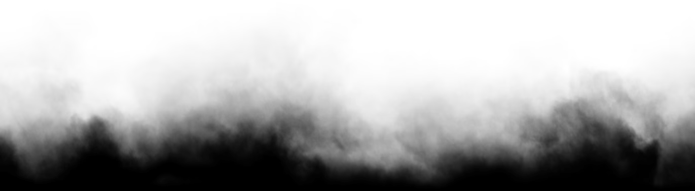
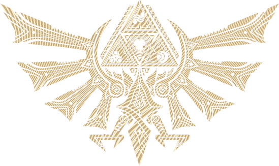
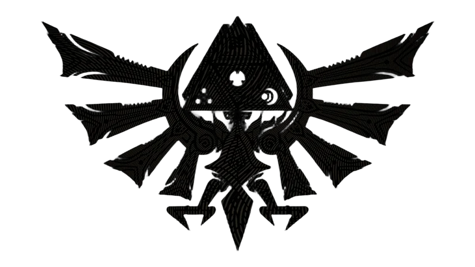
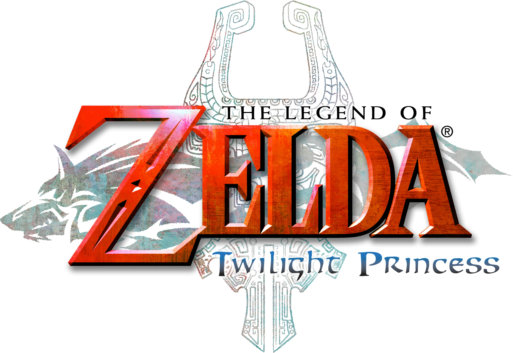
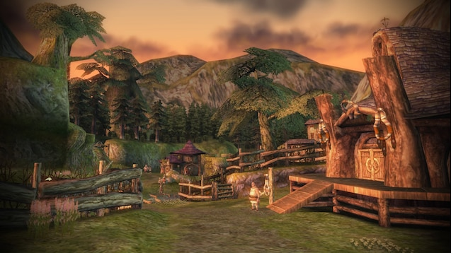
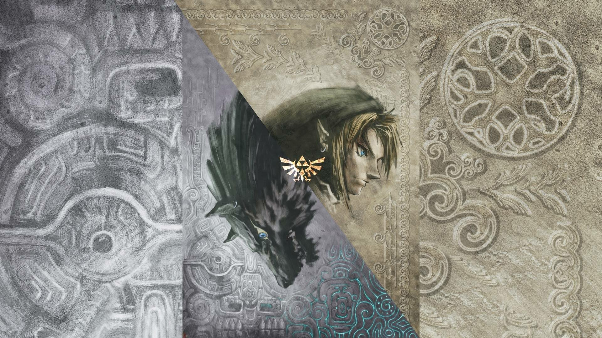

Hyrule Memorium
Adentre neste santuário de memórias tão ricas dos nossos grandes herois de Hyrule...








Em Ordon, Link passa os dias cuidando das cabras com sua égua Epona. Quando monstros levam sua amiga Ilia e as crianças da vila, ele parte em busca delas. Ao atravessar a barreira de sombras que avança sobre Hyrule, Link se transforma em lobo.
É nessa forma que ele conhece Midna, uma habitante do Reino do Crepúsculo. Ao lado dela, Link segue rastros que só seu faro percebe e recupera a luz das províncias de Hyrule. O que começa como uma busca pelos amigos acaba ligando o destino dos dois reinos.

Como humano, Link atravessa os campos com Epona e enfrenta inimigos com a espada. Como lobo, ele fareja pistas e escuta os espíritos. Ao lado de midna, Link enfrenta diversas criaturas de outro mundo a fim de resgatar Hyrule do mundo Twili, enfrentando Zant O Usurpador e Ganondorf, O Fantasma de Hyrule..